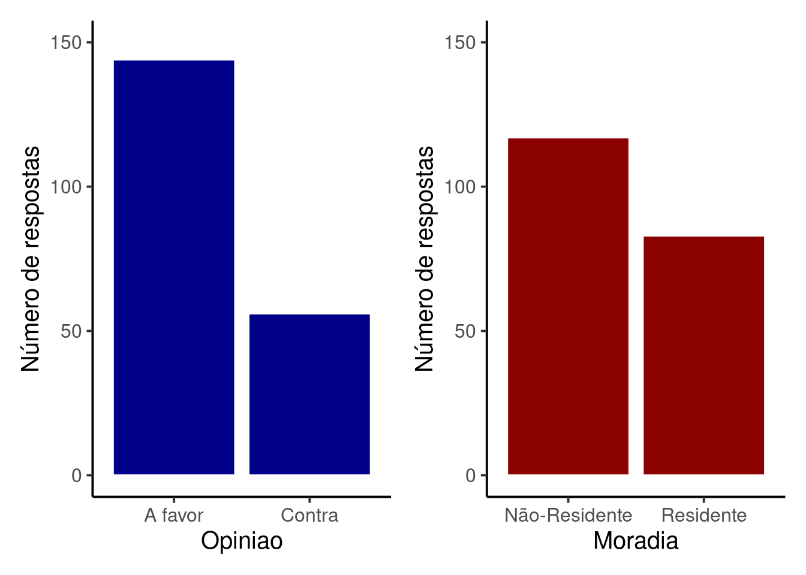

library(tidyverse)
library(flextable)
library(patchwork)
library(gridExtra)
source('scripts/assoc_municipies.r')9 Associação entre duas variáveis qualitativas
Pacotes e funções utilizadas no capítulo
Até agora exploramos formas de representar visualmente uma única variável por vez (Capítulo 3 e Capítulo 4) e discutimos medidas-resumo para descrever algumas propriedades desta variável (Capítulo 5 a Capítulo 8). A partir de agora veremos como representar e resumir padrões de associação entre pares de variáveis. Segundo a natureza dos dados envolvidos, estas associações podem ser entre:
duas variáveis qualitativas (este capítulo);
duas variáveis quantitativas (Capítulo 10) e;
uma variável qualitativa e uma quantitativa (Capítulo 11)
Exemplo do capítulo
Imagine que haverá uma obra de revitalização de uma área na região central da cidade. A obra implicará na melhoria de acesso, de segurança e na oferta de serviços. Entretanto como levará tempo para ser concluída, haverá ações de remoção de moradias irregulares, interdição de ruas e avenidas por longos períodos, etc. A prefeitura encomenda uma pesquisa para saber a opinião dos munícipes. A cada entrevistado são feitas duas perguntas:
- Qual sua opinião sobre a necessidade de realização da obra?
- A favor
- Contra
- Você reside na região diretamente afetada:
- Residente
- Não-Residente
A base de dados está disponível em: Entrevista_municipes.csv
Com estas entrevistas desejamos responder à seguinte questão:
Questão do capítulo
Moradores Residentes da região central têm uma opinião consistentemente diferente de moradores Não-residentes no que se refere a ser A favor ou Contra a obra?
Após entrevistar 200 pessoas selecionadas ao acaso de uma lista da moradores da cidade, é construída uma tabela com três colunas: Entrevistado (sequência numérica do primeiro ao último respondente), Opinião e Moradia. Importe a base de dados Entrevista_municipes.csv para ver a tabela.
mun = read_delim('datasets/Entrevista_municipes.csv',
delim = ',')E veja os primeiros 12 resultados das entrevistas:
Entrevistado | Opiniao | Moradia |
1 | A favor | Residente |
2 | A favor | Residente |
3 | A favor | Residente |
4 | A favor | Residente |
5 | Contra | Não-Residente |
6 | Contra | Residente |
7 | A favor | Não-Residente |
8 | Contra | Não-Residente |
9 | A favor | Não-Residente |
10 | A favor | Não-Residente |
11 | A favor | Residente |
12 | A favor | Não-Residente |
Estão descritos na Tabela 9.1 os resultados das primeiras 12 entrevistas, onde é possível ver ao menos uma combinação de todas as possíveis respostas. O entrevistado pode ser:
A favore serResidenteda região;A favore serNão-Residente;Contrae serResidente;Contrae serNão-Residente.
9.1 Tabelas de frequência e gráficos de barras
Inicialmente, vamos representar cada uma das variáveis por meio de uma tabela de frequência dos 200 entrevistados.
Code
resumo_opiniao = mun %>%
group_by(Opiniao) %>%
summarise(Op_n = n()) %>%
mutate(Op_rel = Op_n/sum(Op_n))
resumo_opiniao %>%
flextable()Opiniao | Op_n | Op_rel |
A favor | 144 | 0.72 |
Contra | 56 | 0.28 |
Das \(200\) respostas tivemos \(144\) pessoas A favor (\(72\%\)) e \(56\) pessoas Contra (\(28\%\)).
Code
resumo_opiniao = mun %>%
group_by(Opiniao) %>%
summarise(Op_n = n()) %>%
mutate(Op_rel = Op_n/sum(Op_n))
resumo_opiniao %>%
flextable()Opiniao | Op_n | Op_rel |
A favor | 144 | 0.72 |
Contra | 56 | 0.28 |
Com relação ao local de residência:
Code
resumo_morad = mun %>%
group_by(Moradia) %>%
summarise(Morad_n = n()) %>%
mutate(Morad_rel = Morad_n/sum(Morad_n))
resumo_morad %>%
flextable()Moradia | Morad_n | Morad_rel |
Não-Residente | 117 | 0.585 |
Residente | 83 | 0.415 |
Responderam à entrevistas um total de \(117\) pessoas Não-Residente (\(58.5\%\)) e \(83\) pessoas Residente (\(41.5\%\))
Se visualizarmos estes totais em gráficos de barras individuais teremos:
Code
plt_op = ggplot(mun, aes(x = Opiniao)) +
geom_bar(fill = 'darkblue', color = 'white') +
coord_cartesian(ylim = c(0, 150)) +
labs(y = 'Número de respostas') +
theme_classic(base_size = 15)
plt_morad = ggplot(mun, aes(x = Moradia)) +
geom_bar(fill = 'darkred', color = 'white') +
coord_cartesian(ylim = c(0, 150)) +
labs(y = 'Número de respostas') +
theme_classic(base_size = 15)
plt_op + plt_morad
Existe portanto um predomínio de pessoas A Favor e um ligeiro predomínio de entrevistados Não-Residentes.
Para responder à questão do capítulo, precisamos verificar se existe alguma associação entre as respostas dadas às duas perguntas explorando a distribuição conjunta dos totais respondidos.
9.2 Tabelas de contingência
Tabelas de contigência são organizadas para verificarmos a associação entre duas variáveis qualitativas. São conhecidas também como tabelas de dupla entrada. Nas colunas estão os níveis da variável \(X\) e nas linhas os níveis da variável \(Y\).
Para nosso exemplo, podemos fazer simplesmente:
tcont = table(mun$Opiniao, mun$Moradia)
tcont
Não-Residente Residente
A favor 81 63
Contra 36 20Temos:
81 - A favor e Não-Residente;
63 - A favor e Residente;
36 - Contra e Não-Residente;
20 - Contra e Residente
Podemos ver os totais marginais das linhas:
tcont_linhas = apply(tcont, 1, sum)
tcont_linhasA favor Contra
144 56 Ou os totais marginais das colunas:
tcont_colunas = apply(tcont, 2, sum)
tcont_colunasNão-Residente Residente
117 83 Que são justamente os totais que verificamos nas distribuições individuais.
Se quisermos ver as frequências relativas marginais podemos fazer:
trel_linha = prop.table(tcont, 1)
trel_linha
Não-Residente Residente
A favor 0.5625000 0.4375000
Contra 0.6428571 0.3571429Neste caso estamos vendo as frequências relativas das linhas, isto é, cada linha nesta tabela soma \(1\). O que vemos nesta tabela é que:
dos \(144\) entrevistados que são A favor, cerca de \(56.25\%\) são Não-Residente, enquanto os demais \(43.75\%\) são Residente
dos \(56\) entrevistados que são Contra, cerca de \(64.29\%\) são Não-Residente, enquanto os demais \(35.71\%\) são Residente
Podemos fazer exatamente o mesmo olhando para as frequências marginais por colunas:
trel_coluna = prop.table(tcont, 2)
trel_coluna
Não-Residente Residente
A favor 0.6923077 0.7590361
Contra 0.3076923 0.2409639Neste caso são as colunas que somam \(1\), portanto:
dos \(117\) entrevistados que são Não-Residente, cerca de \(69.23\%\) são A favor, enquanto os demais \(30.77\%\) são Contra
dos \(83\) entrevistados que são Residente, cerca de \(75.9\%\) são A favor, enquanto os demais \(75.9\%\) são Contra
Podemos finalmente ver a frequência relativa conjunta:
trel_conjunta = prop.table(tcont)
trel_conjunta
Não-Residente Residente
A favor 0.405 0.315
Contra 0.180 0.100Em que o somatório das linhas é igual a:
tcont_linhas / sum(tcont_linhas)A favor Contra
0.72 0.28 indicando os valores relativos das opiniões A Favor e Contra.
O somatório das colunas é igual a:
tcont_colunas / sum(tcont_colunas)Não-Residente Residente
0.585 0.415 indicando os valores relativos de Não-Residentes e Residentes.
Na tabela de frequência relativa conjunta, o somatório total da tabela deve ser igual a \(1\).
9.3 O gráfico de barras para duas variáveis qualitativas
Existem várias formas de gerar um gráfico de barras combinando as duas variáveis. Se quisermos utilizar a própria tabela de contingência obtida a partir do comando table(mun$Opiniao, mun$Moradia), podemos utilizar o comando barplot(). Por outro lado, se quisermos utilizar a tabela original de dados (objeto mun) podemos fazer uso do pacote ggplot2:
Code
plt_bar1 = ggplot(mun) +
aes(x = Moradia, fill = Opiniao) +
geom_bar(color = 'white', position = 'dodge') +
scale_fill_manual(values = c('Contra' = 'darkred',
'A favor' = 'darkblue')) +
coord_cartesian(ylim = c(0, 80)) +
labs(y = 'Número de respostas') +
theme_classic(base_size = 15)
plt_bar1Veja que nesta figura, existem mais opiniões A favor, independente do entrevistado ser ou não residente da região central. Este padrão é o mesmo que observamos no gráfico da variável Opinião isoladamente, o que sugere não haver associação entre as variáveis Opinião e Moradia. Ao que parece, a opinião de um entrevistado sobre a construção da obra não depende de seu local de moradia.
Exemplos de associações entre duas variáveis
Abaixo são apresentadas quatro situações em que existe associação Opinião e Moradia.

Em todos estes exemplos, note que a relação as opiniões A favor ou Contra dependem se o entrevistado é ou não Residente na região. Esses padrões configuram diferentes tipos de associação entre as variáveis Opinião e Moradia, a saber:
Figura A:
Não-Residentestendem a serA favoreResidentessão em sua maioriaContra;Figura B: todos tendem a ser
Contra, mas a diferença de opiniões é maior entre osResidentes;Figura C:
Não-Residentestendem a serContra, enquanto não parece haver diferenças entre osResidentes;Figura D:
Residentestendem a serA favor, enquanto não parece haver diferenças entre osResidentes;
9.4 Medindo a discrepância com o índice de \(\chi^2\) de Pearson
O índice de qui-quadrado (\(\chi^2\)) mede a discrepância entre os valores observados e os valores esperados em uma tabela de contingência.
Digamos que um município tenha \(20\%\) de sua população morando em área Rural e os outros \(80\%\) em área Urbana. Se fizermos uma amostragem ao acaso dos moradores é esperado que esta frequência relativa se reflita na amostra. Neste caso se sorteamos \(200\) pessoas, seria esperado:
Zona Rural: \(40\) moradores
Zona Urbana \(160\) moradores
Entretando, se fazemos um sorteio ao acaso, haverá alguma variação ao redor destes valores, de modo que as frequências observadas (\(o\)) deverão ser diferentes das esperadas (\(e\)). O \(\chi^2\) mede a discrepância entre \(o\) e \(e\) para cada célula de uma tabela de contigência como:
\[\chi^2 = \sum_{i=1}^{n}\frac{(o_i - e_i)^2}{e_i}\]
Para uma tabela de frequências, devemos determinar portanto os valores de \(o_i\) e \(e_i\).
Suponha que uma amostra de \(200\) moradores tenha resultado em:
Code
set.seed(10)
nor = sum(rbinom(n = n, size = 1, prob = pr))
Moradia_obs = data.frame(Regiao = c(rep('Rural', nor),
rep('Urbana', n - nor)))
tb_dfo = table(Moradia_obs)
tb_dfoRegiao
Rural Urbana
31 169 As frequências observadas e esperadas serão:
- Zona Rural:
\(o_{Rural} = 31\)
\(e_{Rural} = 0.2 \times 200 = 40\)
- Zona Urbana
\(o_{Urbana} = 169\)
\(e_{Urbana} = 0.8 \times 200 = 160\)
De modo que o valor de \(\chi^2\) será:
\(\chi^2 = \frac{(31 - 40)^2}{40} + \frac{(169 - 160)^2}{160} = \frac{(-9)^2}{40} + \frac{(9)^2}{160} = 2.025 + 0.50625 = 2.53125\)
9.5 O índice de \(\chi^2\) em uma tabela de contigência
No exemplo acima, as contagens esperadas foram definidas a partir de um modelo que dizia que as populações rurais e urbanas se dividiam nas proporções \(20\%:80\%\). Em uma tabela de contigência, a hipótese em verificação é a de que não há associação entre \(X\) e \(Y\). Se for assim, é esperado que as frequências conjuntas sejam porporcionais às frequências marginais. Vamos apresentar esta ideia utilizando uma notação geral para tabelas de contingência e, em seguida, discutir com um exemplo.
A tabela Tabela 9.2 apresenta \(r\) linhas por \(s\) colunas com as contagens de todas as combinações dos níveis da variável \(X\) (Níveis \(A_{1}\) a \(A_{r}\)) e da variável \(Y\) (Níveis \(B_{1}\) a \(B_{s}\)). Os totais marginais de \(X\) e \(Y\) são expressos respectivamente na última coluna e na última linha.
| X ⟍ Y | \(B_{1}\) | \(B_{2}\) | \(\cdots\) | \(B_{j}\) | \(\cdots\) | \(B_{s}\) | Totais em \(X\) |
|---|---|---|---|---|---|---|---|
| \(A_{1}\) | \(n_{11}\) | \(n_{12}\) | \(\cdots\) | \(n_{1j}\) | \(\cdots\) | \(n_{1s}\) | \(n_{1.}\) |
| \(A_{2}\) | \(n_{21}\) | \(n_{22}\) | \(\cdots\) | \(n_{2j}\) | \(\cdots\) | \(n_{2s}\) | \(n_{2.}\) |
| \(\vdots\) | \(\vdots\) | \(\vdots\) | \(\vdots\) | \(\vdots\) | \(\vdots\) | \(\vdots\) | \(\vdots\) |
| \(A_{i}\) | \(n_{i1}\) | \(n_{i2}\) | \(\cdots\) | \(n_{ij}\) | \(\cdots\) | \(n_{is}\) | \(n_{i.}\) |
| \(\vdots\) | \(\vdots\) | \(\vdots\) | \(\vdots\) | \(\cdots\) | \(\cdots\) | \(\vdots\) | \(\vdots\) |
| \(A_{r}\) | \(n_{r1}\) | \(n_{r2}\) | \(\cdots\) | \(n_{rj}\) | \(\cdots\) | \(n_{rs}\) | \(n_{r.}\) |
| Totais em \(Y\) | \(n_{.1}\) | \(n_{.2}\) | \(\cdots\) | \(n_{.j}\) | \(\cdots\) | \(n_{rs}\) | \(n\) |
Sob a hipótese de não-associação entre \(X\) e \(Y\) teremos que:
\(\frac{n_{i1}}{n_{.1}} = \frac{n_{i2}}{n_{.2}} = \cdots = \frac{n_{is}}{n_{.s}} = \frac{n_{i.}}{n}\)
e assim:
\(\frac{n_{ij}}{n_{.j}} = \frac{n_{i.}}{n}\)
Deste modo:
\(n_{ij}^{e} = \frac{n_{i.} \times n_{.j}}{n}\)
Observações
A notação \(n_{ij}^{e}\) está sendo utilizada para denotar que a expressão acima determina a contagem de cada célula da tabela sob a hipótese de não associação e portanto, se refere ao valor esperado de \(n_{ij}\).
Tendo definido os valores esperados em uma tabela de contingência de \(r \times s\), o \(\chi^2\) é dado por:
\[\chi^2 = \sum_{i=1}^{r}\sum_{j=1}^{s}\frac{(n_{ij} - n_{ij}^{e})^2}{n_{ij}^{e}}\]
Retornando ao exemplo das entrevistas
A tabela de contingência contendo os dados observados do início do capítulo pode ser escrita como:
| Não-Residente | Residente | Total Opinião | |
|---|---|---|---|
| A favor | 81 | 63 | 144 |
| Contra | 36 | 20 | 56 |
| Total Moradia | 117 | 83 | 200 |
Os Valores esperados na linha \(i\) e coluna \(j\) são:
- Linha \(1\) - Coluna \(1\) (
Não-Residente-A favor):
\(n_{ii}^{e} = \frac{n_{1.} \times n_{.1}}{n} = \frac{144 \times 117}{200} = 84.24\)
- Linha \(1\) - Coluna \(2\) (
Residente-A favor):
\(n_{ii}^{e} = \frac{n_{1.} \times n_{.2}}{n} = \frac{144 \times 83}{200} = 59.76\)
- Linha \(2\) - Coluna \(1\) (
Não-Residente-Contra):
\(n_{ii}^{e} = \frac{n_{2.} \times n_{.1}}{n} = \frac{56 \times 117}{200} = 32.76\)
- Linha \(2\) - Coluna \(2\) (
Residente-Contra):
\(n_{ii}^{e} = \frac{n_{2.} \times n_{.2}}{n} = \frac{56 \times 83}{200} = 23.24\)
De modo que a tabela com os valores esperados será:
| Não-Residente | Residente | Total Opinião | |
|---|---|---|---|
| A favor | 84.24 | 59.76 | 144 |
| Contra | 32.76 | 23.24 | 56 |
| Total Moradia | 117 | 83 | 200 |
Finalmente, o valor de \(\chi^2\) pode ser calculado por:
\(\chi^2 = \frac{(81 - 84.24)^2}{84.24} + \frac{(36 - 32.76)^2}{84.24} + \frac{(63 - 59.76)^2}{84.24} + \frac{(20 - 23.24)^2}{84.24} = 1.072\)
9.6 Valores de \(\chi^2\) quando existe associação
O valor de \(\chi^2\) será zero somente se os valores observados forem exatamente iguais aos valores esperados. Pequenas discrepâncias irão gerar valores de \(\chi^2\) acima de zero, que se tornarão mais altos à medida que aumentam as diferenças entre \(n_{ij}\) e \(n_{ij}^e\).
Quantificando as associações
Abaixo estão diferentes exemplos em que existe associação entre Opinião e Moradia. Compare os valores e os gráficos abaixo aos que fizemos no exemplo do capítulo e veja que todos os valores de \(\chi^2\) são mais elevados.
- Tente aplicar a fórmula do \(\chi^2\) para chegar aos resultados apresentados em cada exemplo.
9.7 Variações do índice de \(\chi^2\)
O valor de \(\chi^2\) aumenta com o tamanho da amostra, o que torna difícil comparações entre diferentes estudos. Para corrigir este efeito existe o coeficiente de contigência de Pearson (\(C\)) que é baseado no resultado de \(\chi^2\)
\[C = \sqrt{\frac{\chi^2}{\chi^2 + n}}\]
em que \(n\) é o tamanho da amostra.
O valor máximo de \(C\) depende do número de linhas (\(r\)) e de colunas (\(s\)) na tabela de contingêcia. Podemos definir um coeficiente que esteja limitado entre \(0\) e \(1\):
\[T = \sqrt{\frac{\frac{\chi^2}{n}}{(r-1) \times (s-1)}}\]
O valor \(T = 0\) ocorre quando não há associação (\(\chi^2 = 0\)) e o valor máximo de \(T = 1\) só será atingido se houver associação e \(r = s\)
9.8 Obtendo o índice de \(\chi^2\) de uma tabela de dados
A função para o cálculo do \(\chi^2\) no R é chisq.test e pode ser utilizada a partir da tabela de contigência gerada pela função table:
tcont = table(mun$Opiniao, mun$Moradia)
chisq.test(tcont)
Pearson's Chi-squared test with Yates' continuity correction
data: tcont
X-squared = 0.76697, df = 1, p-value = 0.3812O resultado mostra o o valor de \(\chi^2\) calculado (X-squared) e outras duas quantias denominadas de graus de liberdade (df) e valor de p (p-value), tópicos abordados em inferência estatística.
Note que o resultado é diferente do que obtivemos neste capítulo. Isto ocorre pois, por padrão, a função utiliza a correção de Yates, em que \(\chi_{Yates}^{2}\) é calculado por:
\[\chi_{Yates}^{2} = \sum_{i=1}^{r}\sum_{j=1}^{s}\frac{(|n_{ij} - n_{ij}^{e}| - 0,5)^2}{n_{ij}^{e}}\]
O termo \(|n_{ij} - n_{ij}^{e}|\) se refere ao módulo da distância entre os valores observados e calculados.
Se quisermos obter exatamente os resultados descritos no exemplo deste capítulo, basta fazermos:
chisq.test(tcont, correct = FALSE)
Pearson's Chi-squared test
data: tcont
X-squared = 1.0724, df = 1, p-value = 0.3004